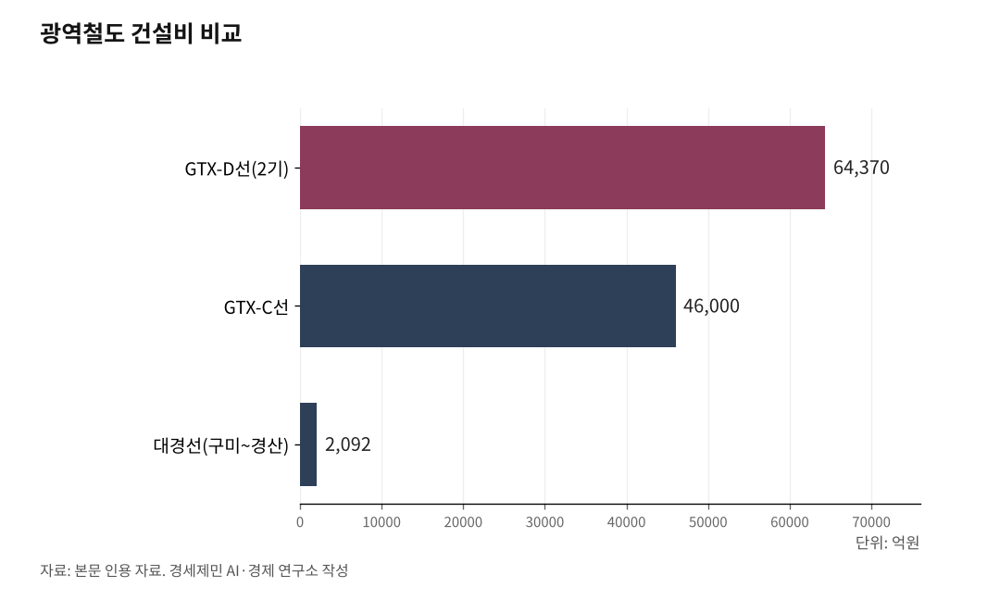

[127년 한국철도⑬] 수도권만 GTX 넘친다… 5극3특 권역마다 광역철도망을
A선에서 H선까지 느는 GTX, 국비 70%로 수도권만 광역급행
대경선은 달리는데 강원·호남은 공백… 지방 광역경제권은 방치됐다
서울 방사형이 격차를 키운다… 권역마다 광역철도망을 놓아야 균형이다
인하대 해양AI융합센터 김갑봉 연구교수(물류학)│수도권에는 광역급행철도(GTX)가 A선에서 H선까지 줄줄이 늘어난다. 그사이 강원과 호남에는 광역철도가 한 가닥도 없다. 정부 재정은 한정돼 있다. 그 한정된 돈을 수도권 광역급행에 몰면, 서울로 사람과 물자와 부가가치가 빨려 드는 쏠림은 더 깊어진다. 진정한 균형발전은 5극3특 광역경제권마다 광역철도망을 놓는 데서 시작한다.

1. A선에서 H선까지, 수도권만 광역급행
수도권 광역급행철도는 계속 불어난다. 1기 A·B·C선이 개통하거나 착공했고, 2024년에는 2기 D·E·F선을 확정했으며, 경기도는 같은 해 GTX플러스로 G·H선 신설과 C선 연장까지 내놨다. A선에서 H선까지, 노선이 끝없이 는다.
문제는 돈의 출처다. 광역철도 건설비는 국비 70%, 지방비 30%가 들어가고, 서울시 구간만 나라와 서울이 절반씩 나눈다. 수도권 통근망인 광역급행에 나라 예산의 큰 몫이 들어가는 셈이다. 노선마다 조 단위다. GTX-C에 4조6000억원, 2기 D선에 6조4370억원이 든다. 경제성도 뒷전이다. 비용편익비(B/C)가 1을 밑돌아도 밀어붙이고, 고양·남양주·하남 같은 수도권 지자체가 앞다퉈 새 노선을 요구한다.

2. 지방에도 광역경제권이 있다
수도권만 통근권이 있는 것이 아니다. 지방에도 여러 도시가 한데 묶인 광역경제권이 있다. 그런데 지방의 광역철도는 이제 겨우 첫발을 뗐다.
대구권이 앞섰다. 구미에서 대구를 지나 경산까지 61.8km를 잇는 대경선이 2024년 12월 비수도권에서 처음으로 개통했고, 한 해 동안 512만명이 탔다. 기존 경부선의 여유 용량을 살려 2092억원으로 놓았으니, 조 단위인 수도권 광역급행과는 씀씀이가 다르다. 충청권은 대전과 세종, 청주공항을 잇는 광역급행(CTX) 64.4km를 2028년 착공, 2034년 개통을 목표로 삼았다. 동남권은 부산과 울산을 잇는 동해선 광역전철이 이미 달리고, 부산~양산~울산 48.8km와 동남권순환 51.4km를 추진한다.
반면 강원권과 호남권은 광역철도가 사실상 없다. 같은 나라 안에서 어떤 권역은 광역급행이 여럿인데, 어떤 권역은 한 가닥도 없다.
3. 축은 그렸는데 삽을 못 뜬다
권역 안만이 아니다. 권역과 권역을 잇는 축도 계획만 있고 삽을 못 뜬다.
강원과 호남을 가로로 잇는 강호축의 핵심인 충북선 고속화는 1조9058억원을 들여 시속 120km를 260km로 높이는 사업인데, 2031년 개통을 목표로 아직 공사 초입이다. 대구와 광주를 198.8km로 잇는 달빛내륙철도는 20여 년 숙원 끝에 2024년 특별법까지 만들어졌으나, 착공은 2027년 예정인데, 예비타당성조사 면제 결정마저 미뤄져 아직 첫 삽을 못 떴다. 부산에서 목포로 남해안을 따라가는 남해안철도도 토막이다. 목포보성선은 2025년 9월 열렸지만, 부전~마산은 터널 사고로 지연됐고 광주송정~순천 개량은 2030년 개통을 목표로 한다. 호남과 대경을 잇는 축도, 충청과 강원을 잇는 축도 사정이 다르지 않다.
수도권 GTX가 착착 삽을 뜨는 사이, 지방을 잇는 축은 도면에 머문다. 이 속도 차이가 곧 격차다.
4. 5극3특, 권역마다 광역철도망을
길은 분명하다. 한정된 나라 예산을 수도권 광역급행에 몰지 말고, 5극3특 광역경제권마다 광역철도망을 놓는 데 나눠야 한다.
수도권 광역급행은 인구와 세수가 몰린 수도권이 스스로 감당할 여력이 있다. 국비는 지방 광역경제권으로 돌려야 한다. 충청권과 부울경권, 대경권의 광역철도를 마저 잇고, 강원권과 호남권의 공백을 메운다. 호남은 전남·광주통합특별시에 전북을 묶어 하나의 광역철도망으로 짠다. 바다로 둘러싸인 제주는 이 그림에서 빠진다.
수도권 인구는 2024년 이미 50.8%로 절반을 넘었다. 사람과 기업이 서울로 모이는데 국비까지 수도권 철도에 얹으면 쏠림은 되돌리기 어렵다. 서울 중심 방사형 철도망은 서울과 비서울의 격차를 키울 뿐이다. 에너지와 물자, 사람과 정보, 부가가치가 서울로 빨려 드는 구조를 철길이 더 굳힌다. 권역마다 스스로 도는 광역철도망을 놓는 것, 그것이 균형발전의 시작이다.
※ 이 기사는 AI 프로그램 클로드를 활용해 작성했습니다.
참고문헌
· "구미~대구~경산 잇는 대구권 광역철도 개통…총 61.8㎞", 대한민국 정책브리핑, 2024.12.13., https://www.korea.kr/news/policyNewsView.do?newsId=148937353
· "충청권 CTX, 2028년 첫삽 뜬다…대전-세종-청주 30분 시대", 대한민국 정책브리핑, https://www.korea.kr/news/policyNewsView.do?newsId=148953949
· "23년 걸린 목포보성선 개통…남부 지역 접근성 향상", 아시아경제, 2025.9.26., https://www.asiae.co.kr/article/2025092618174084464
· "광역철도 일반현황(재원분담 국비 70%·지방 30%)", 대도시권광역교통위원회, https://www.molit.go.kr/mtc/USR/WPGE0201/m_37144/DTL.jsp
· "충북선 고속화 2031년 개통, 목포~강릉 KTX-이음 가능", 인천투데이, 2023., https://www.incheontoday.com/news/articleView.html?idxno=263133
· "'광주~대구 1시간' 달빛철도 198.8km…착공 2027년 예정", 뉴시스, 2024.1.25., https://www.newsis.com/view/NISX20240125_0002605191
· "부·울·경, 동남권 잇는 광역철도로 지역균형발전", 철도경제신문, https://www.redaily.co.kr/news/articleView.html?idxno=8112
· "GTX 3기 신도시發 노선 확대 논쟁", 시사저널e, https://www.sisajournal-e.com/news/articleView.html?idxno=420608
#한국철도127년 #광역철도망 #5극3특 #GTX난립 #수도권편중 #지역균형발전 #대경선 #충청권CTX #강호축 #달빛내륙철도